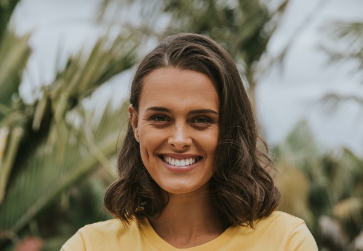

Genevieve Mora spent most of her teenage years battling mental illness, and as part of her recovery she has made it her mission to offer hope to those who are struggling with their mental health and through this she is show people that recovery is possible and no one should be afriad of having a mental illness. On her youtube channel she has uploaded vidoes explaining her story with OCD as well as answering questions people had about her journey. She is also the co-creator of Love your kite, a global eating disorder resource app to help support eating disorder recovery, it is a kind and caring app that helps cheer you on with lots of positive affirmations and also tips on how to calm yourself down. To learn more about Genevieve and her journey with having a mental illness there will be a video below you can watch.
